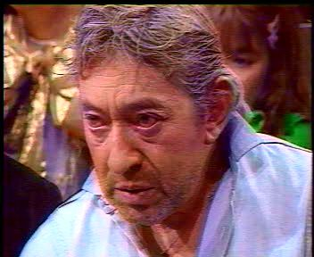

7 sur 7
Extrait de l'émission mythique. Gainsbourg face à Anne Sinclair — moments d'anthologie.
Télécharger l'AVIExtraits télévisés & spots d'époque
Quelques extraits vidéo rares de Serge Gainsbourg : passages mythiques à la télévision et publicités cultes. Les fichiers AVI d'origine sont proposés en téléchargement pour les passionnés d'archives.
Extrait de l'émission mythique. Gainsbourg face à Anne Sinclair — moments d'anthologie.
Télécharger l'AVI
Passage dans Culture Pub : l'analyse et le regard de Gainsbourg sur la publicité.
Télécharger l'AVI
Spot publicitaire de 1980. L'icône Gainsbourg au service de la marque.
Télécharger l'AVI